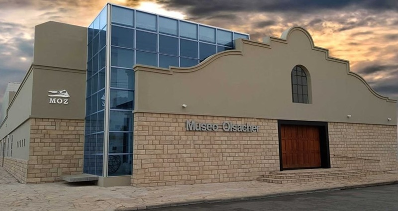
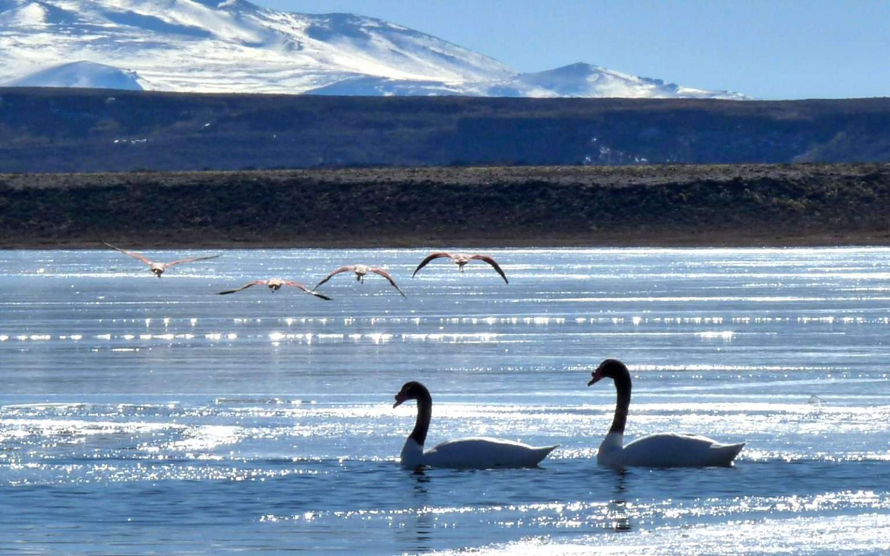
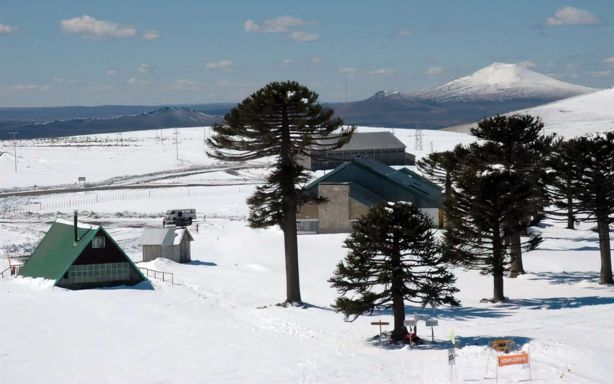

Zapala es una ciudad estratégica y cultural. Es el hogar del Museo Provincial de Ciencias
Naturales "Prof. Dr. Juan A. Olsacher", un lugar imprescindible para los amantes
de la geología.
Zapala es conocida como el Nudo de Comunicaciones de la Patagonia. Ubicada en el centro exacto de la
provincia de Neuquén, es el punto donde convergen las principales rutas que conectan la cordillera con
el valle. Caminar por sus calles es sentir el viento patagónico y descubrir una ciudad con una fuerte
impronta ferroviaria y minera
"Nuestro destino nunca es un lugar, sino una nueva forma de ver las cosas." - Henry
Miller
¿Qué hacer en Zapala?
Museo Olsacher: Un viaje al pasado
El Museo Provincial de Ciencias Naturales "Juan Olsacher" es uno de los más
importantes de Sudamérica. Posee una colección increíble de minerales y fósiles que cuentan
la historia de la región desde hace millones de años. Es una visita obligada para quienes desean
entender la riqueza geológica de Zapala.

Parque Nacional Laguna Blanca
Ubicado a pocos kilómetros, es un santuario de aves y naturaleza virgen.
El Parque Nacional Laguna Blanca es un oasis de biodiversidad en plena estepa
patagónica. Es famoso
por ser uno de los sitios de nidificación más importantes del Cisne de Cuello Negro. Sus
senderos
permiten observar paisajes volcánicos únicos y una fauna que incluye desde flamencos hasta pequeños
anfibios endémicos. Es un lugar ideal para el avistaje de aves y la fotografía de naturaleza.

Esquí en Primeros Pinos
El parque de nieve ideal para familias y principiantes.
Primeros Pinos es el parque de nieve por excelencia para las familias neuquinas.
Rodeado de
milenarios bosques de Pehuenes (Araucarias), ofrece pendientes suaves ideales para quienes están
aprendiendo a esquiar o simplemente quieren divertirse con trineos en la nieve. Su cercanía con
Zapala lo convierte en la escapada perfecta para disfrutar del invierno patagónico.

Desafío y Belleza: La Cuesta del Rahue
Partiendo desde Zapala por la Ruta Provincial 46, se accede a uno de los miradores
más impactantes de Neuquén: la Cuesta del Rahue. Este camino zigzagueante ofrece una vista
panorámica inigualable de la cordillera y los picos nevados.
Es un trayecto imprescindible para quienes buscan aventura, donde el contraste
entre la estepa y los bosques de araucarias se vuelve una experiencia mágica e inolvidable.